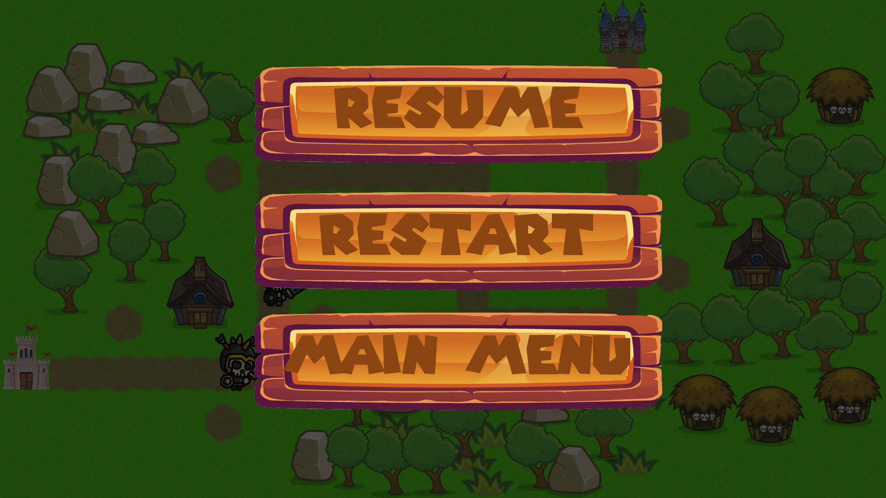
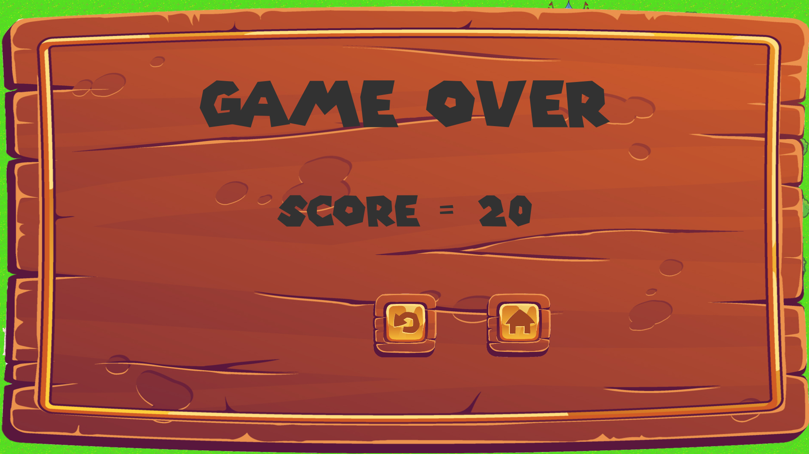
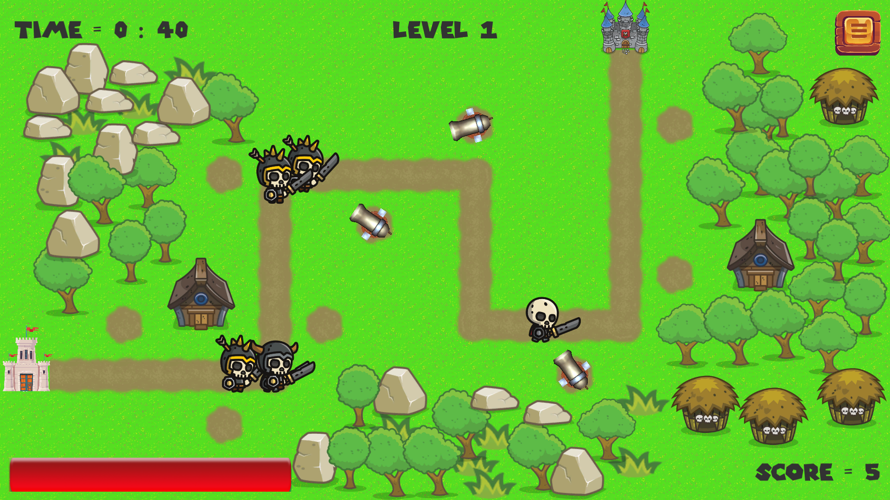
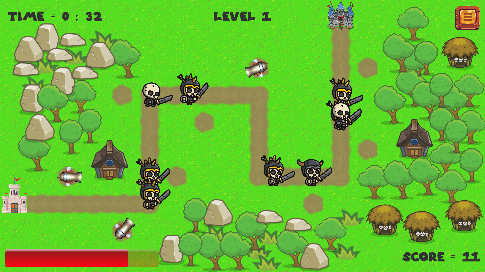

Tower Bizarre Adventure
A stylized strategic tower defense game where players position specialized defense sentinels and mystical guardians along intricate paths to shield the sovereign King from relentless waves of demonic invaders.
Watch Wave Defense & Tower Placement Gameplay
Strategic Depth & Gameplay Mechanics
In Tower Bizarre Adventure, the objective transcends simple static turret placement. Every tower features distinct attack tempos, damage types (Piercing, Arcane Burn, Frost Slow, Area Blast), and synergy effects:
- Synergy Stacking: Freezing an enemy increases vulnerability to Arcane shockwaves, encouraging players to construct complementary defense choke points.
- Dynamic Waypoint Pathfinding: Enemies follow modular spline and waypoint routes, automatically recalculating paths if obstacles or summon walls are triggered.
- Multi-Branch Upgrade Trees: Towers can be promoted along branched specializations (e.g., transforming a single-target sniper tower into a hyper-velocity chain-lightning emitter).
- Resource Pacing Balance: Mana gains scale dynamically with kill combos, forcing players to evaluate whether to build new perimeter towers or supercharge existing core sentinels.
Engineering Highlights
To handle hundreds of simultaneous enemies and projectile calculations smoothly in WebGL:
- Built a lightweight, zero-allocation projectile pooling system for high fire-rate ballistics.
- Optimized distance calculations using squared distance checks (`sqrMagnitude`) rather than costly square-root calculations during target acquisition loops.
- Utilized clean ScriptableObject data architecture for defining tower stats, leveling curves, and status effect multipliers.
Visual Archive
Full HD Gameplay Screenshots

Cover Art & King's Throne Arena

Dynamic Waypoint Pathfinding & Enemy Invasions

Elemental Sentinel Placement & Area Defense

Modular Turret Upgrade Paths & Stat Scaling

Late-Game Horde Encounters & Particle Combat